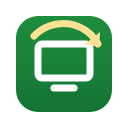

The screen on the wall that never needs a human.
Tab Rotator cycles through your Grafana, Datadog, Power BI, Salesforce or Jira dashboards on any TV or monitor, and fixes them when they break: crashed tabs, failed loads, expired sessions, frozen pages.
See pricing Chrome extension · coming to the Chrome Web Store
Free, and genuinely useful
- Rotate tabs or a playlistThe tabs in a window, or a list of URLs it opens and keeps open.
- Per-tab timingEach dashboard gets its own duration, with an optional fresh reload just before it's shown.
- Survives everythingSleep, Chrome restarts and clock changes. It picks up where it should be, not where it was.
- Basic self-healingCrashed or failed tabs are skipped and reloaded with backoff; closed playlist tabs reopen.
- Pauses for peopleStops while someone uses the keyboard or mouse, and resumes when they walk away.
- Hands-off startToolbar button, keyboard shortcut, or start automatically when the browser launches.
Pro: for IT teams running many screens
- Bad-state detectionSigned-out pages, SSO redirects, "502" and "session expired" titles, and pages frozen for N minutes are reloaded, reopened, skipped or alerted on.
- AlertsSlack, Microsoft Teams, Discord or any webhook, when a screen can't fix itself and when it recovers, plus a daily "all OK".
- Fleet configManage every screen from one JSON file in git. Invalid files are rejected and the last good config stays.
- Display hoursRotate 07:00–18:00 on weekdays; show a black screen, a welcome page or another playlist the rest of the time.
- Health logEvery anomaly and recovery, timestamped and exportable as CSV, for "the TV looked weird yesterday".
- Settings lockA PIN on settings and start/stop, so passers-by can't break it.
| Free | Pro | |
|---|---|---|
| Rotation, playlists, per-tab timing, auto-start | ✓ | ✓ |
| Crash and load-failure recovery, idle pause | ✓ | ✓ |
| Bad-state detectors (login, error, frozen) | ✓ | |
| Webhook alerts and daily heartbeat | ✓ | |
| Fleet config from one file | ✓ | |
| Display hours and off-hours content | ✓ | |
| Health log with CSV export | last 20 events | ✓ |
| PIN settings lock | ✓ |
Pricing
Tab Rotator is free. Pro is priced per screen: one license key covers as many screens as you buy, and each screen activates it once.
Cancel any time.
Three months free versus monthly.
Lifetime license for the current major version and its updates.
Prices in USD; sales tax or VAT is added at checkout where applicable. Checkout opens when Tab Rotator is published. To be notified, email dmhedden123@gmail.com.
How licensing works
- After purchase you receive a license key by email.
- Paste it into Tab Rotator's settings on a screen, or put it in your fleet config file, and every screen activates itself.
- Each screen uses one activation. Retiring a screen? Deactivate it in its settings and the activation moves to another.
- Screens check the key about twice a day. If your network is down, Pro keeps working for 14 days.
Privacy
No analytics or telemetry, ever. Settings and logs stay on each screen. Tab Rotator only contacts addresses you give it (your config file and your alert webhook) and, for Pro, our license server to check your key. Details: privacy policy.
FAQ
Which browsers?
Google Chrome and Chromium-based browsers (Edge, Brave) on Windows, macOS, Linux and ChromeOS.
Does it work in kiosk mode?
Yes. Run Chrome with --kiosk and auto-start, and the screen boots straight into a rotating dashboard.
Can I try Pro first?
Email us for a trial key. Monthly plans can also be cancelled at any time.
Do you offer invoices or purchase orders?
Every purchase gets a tax invoice from Lemon Squeezy. For purchase orders or larger fleets, email us.